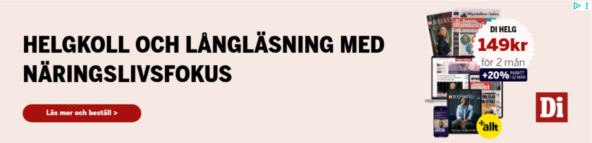

Michael Jackson
Publicerad 2026-11-12 13.44. Foto: Niclas Jönsson/Bildbyrån
Som spelare deltog han i Davis Cup under 14 spelade säsonger, var med och tog tre titlar och spelade fyra finaler. Han var som bäst rankad världsetta i dubbel och fyra i singel.
Efter den aktiva karriären har han varit coach till toppspelare som Andy Murray och Marin Cilic,
Nu vill han vara med och ta svensk tennis närmare världseliten igen.
– Vi är ju en bit därifrån, så vi får jobba utifrån förutsättningarna, säger Björkman.
– Samtidigt känns det otroligt positivt med den vilja och energi som finns för att göra skillnad för svensk tennis.
1997 tog Björkman singeltiteln i Stockholm Open, i år åkte de tre svenskarna i singelturneringen, Elias Ymer, Max Dahlin och Leo Borg, samtliga ut i första omgången. Högst världsranking just nu har Ymer, plats 254.
Under 1980 och -90-talet var Sverige en stormakt som konstant slogs om Davis Cup-guldet. Under epoken vann Sverige sex guld och kom till final elva gånger. I dag är den femte, sett till titlar, bästa nationen genom tiderna rankad på en 30:e plats.
Landslagets prestationer speglar enligt Björkman hela Tennissverige.
– Vi har tappat väldigt många tennisklubbar ute i landet och juniorer som tävlar. Det behöver byggas upp från grunden.
I Stockholm har man ett annat problem, menar Björkman. Ett problem som fanns redan under hans tid.
– De flesta av oss som lyckades under 80- och 90-talet, vi var ju från mindre städer. Sedan finns det ju de som har lyckats och kommer från Stockholm, men man behöver hitta en bra kombination.
Utanför Stockholm ser den nya Davis cup-kaptenen ett spelar- och klubbtapp medan han ser en banbrist i huvudstaden.
– Man får hoppas på att Stockholms stad kan stötta och bidra till fler banor så att man får samma förutsättningar som man har i resten av landet. Sedan kan Tennisförbundet jobba med att få igång tennisen ute i landet.
Enligt Expressen har antalet tävlingsjuniorer minskat med 85 procent de senaste 20 åren. Antalet tennisklubbar har minskat från runt 1 000 till 360.